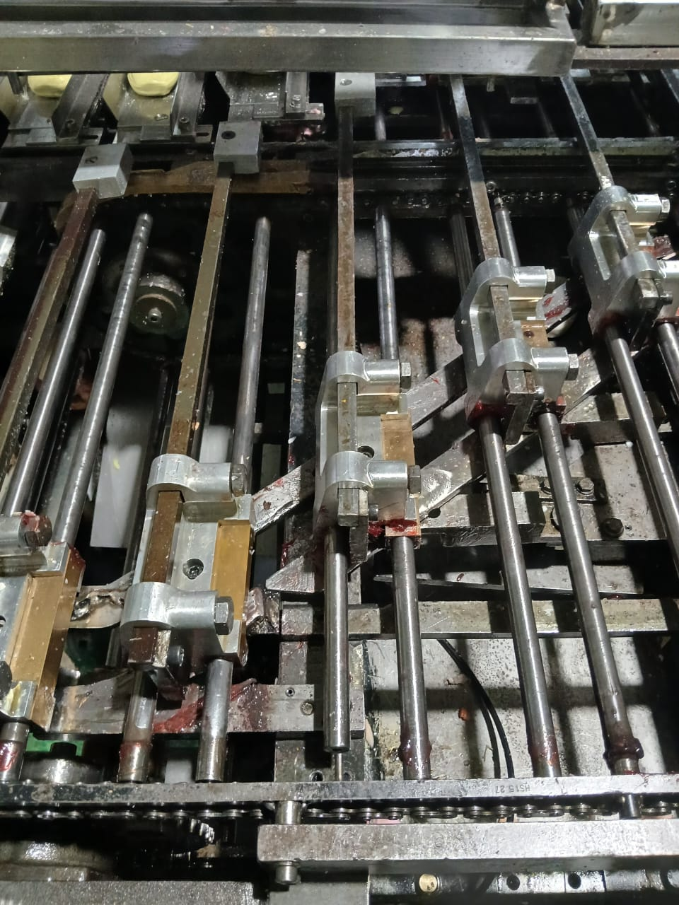
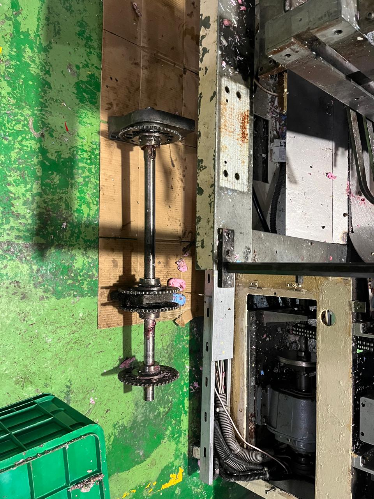
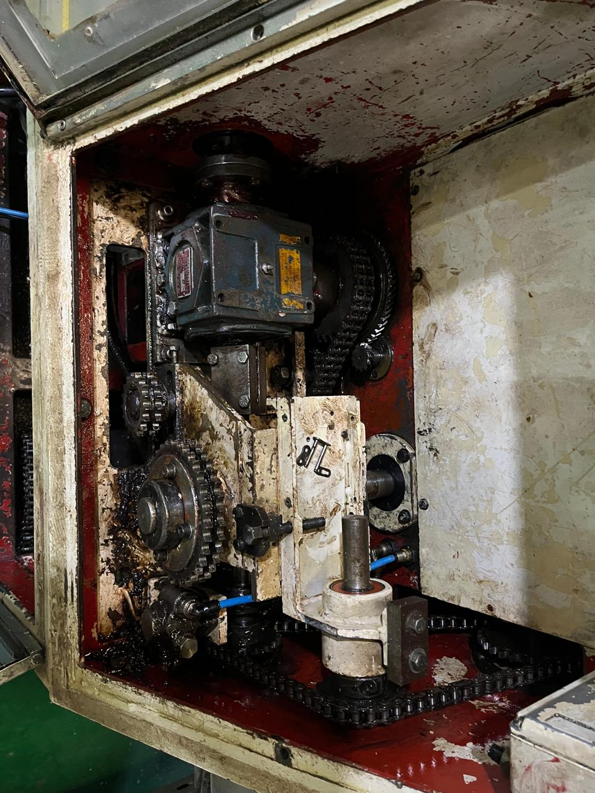
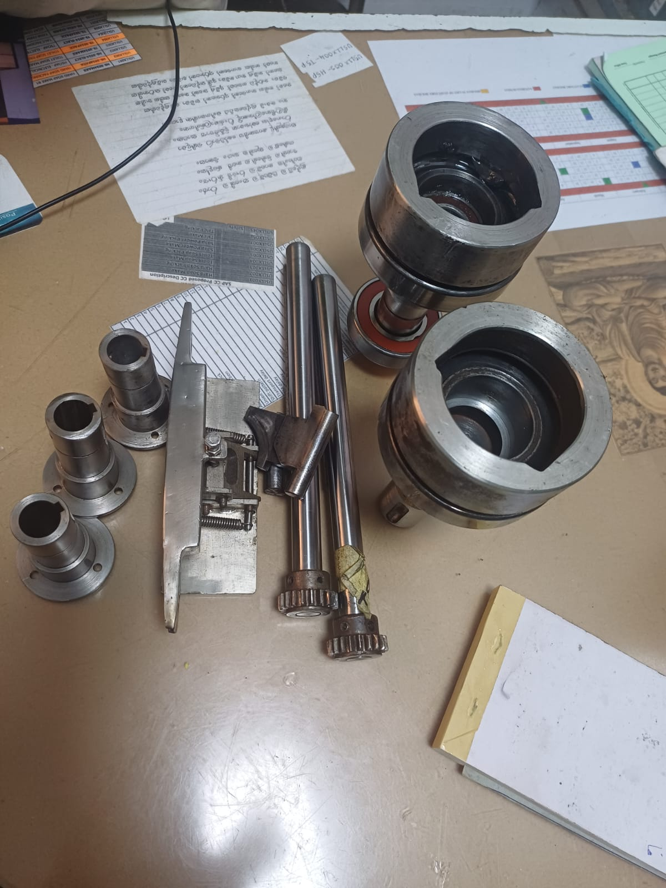

Packaging Machine Overhaul & Spare Parts Localization
Project Objective:
Reduce spare part costs through localization and refurbishment while extending equipment life and improving machine reliability.
Description
This project focused on extending the operational life of ACMA packaging machines through strategic refurbishment, spare part localization, and reliability improvements. The initiative significantly reduced spare part expenditure while maintaining production performance and availability.
ACMA 325 Machine


ACMA 741 Machine


Key Actions
- Localized critical imported spare parts.
- Refurbished worn machine components.
- Improved machine reliability and maintainability.
- Optimized preventive maintenance plans.
- Extended equipment operational life.
Key Results
- ✅ Reduced spare part costs from LKR 18 Mn to LKR 2 Mn.
- ✅ Extended equipment life by approximately five years.
- ✅ Improved machine reliability and availability.
- ✅ Reduced dependence on imported spare parts.
- ✅ Delivered significant annual cost savings.
Skills Demonstrated
Reliability Engineering • Maintenance Management • Spare Parts Localization • Mechanical Engineering • Root Cause Analysis • Continuous Improvement • Cost Optimization
← Back to Portfolio